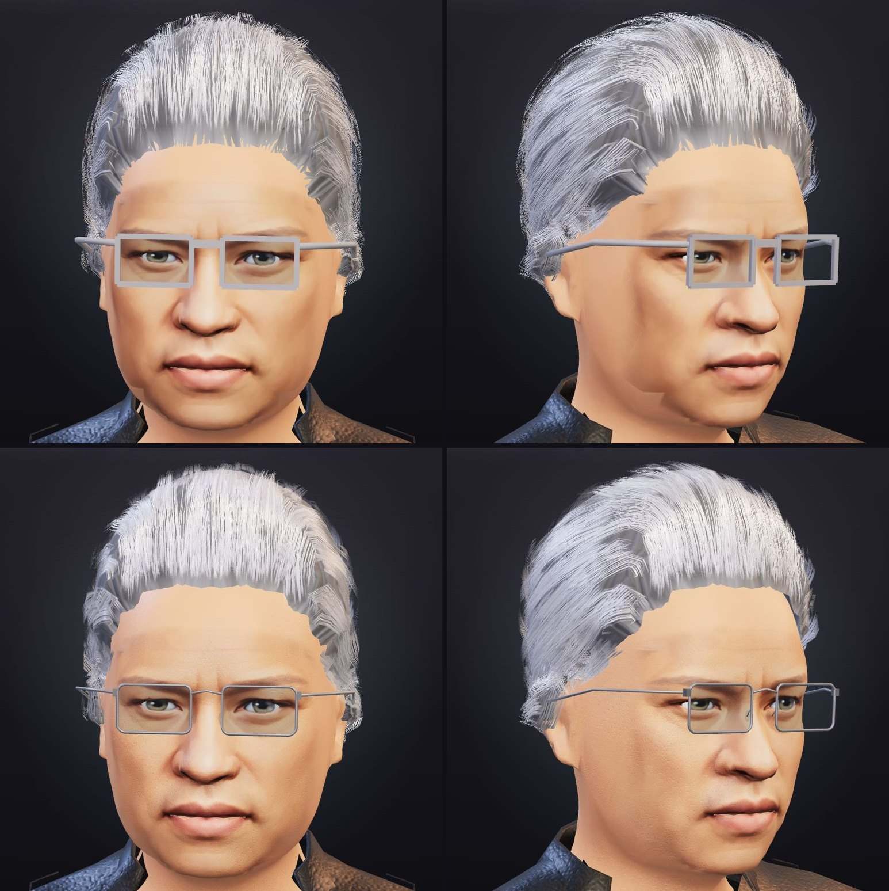
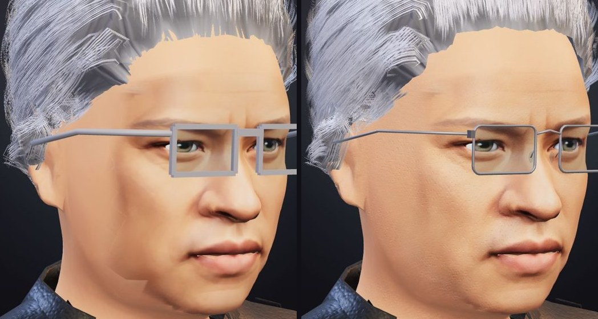
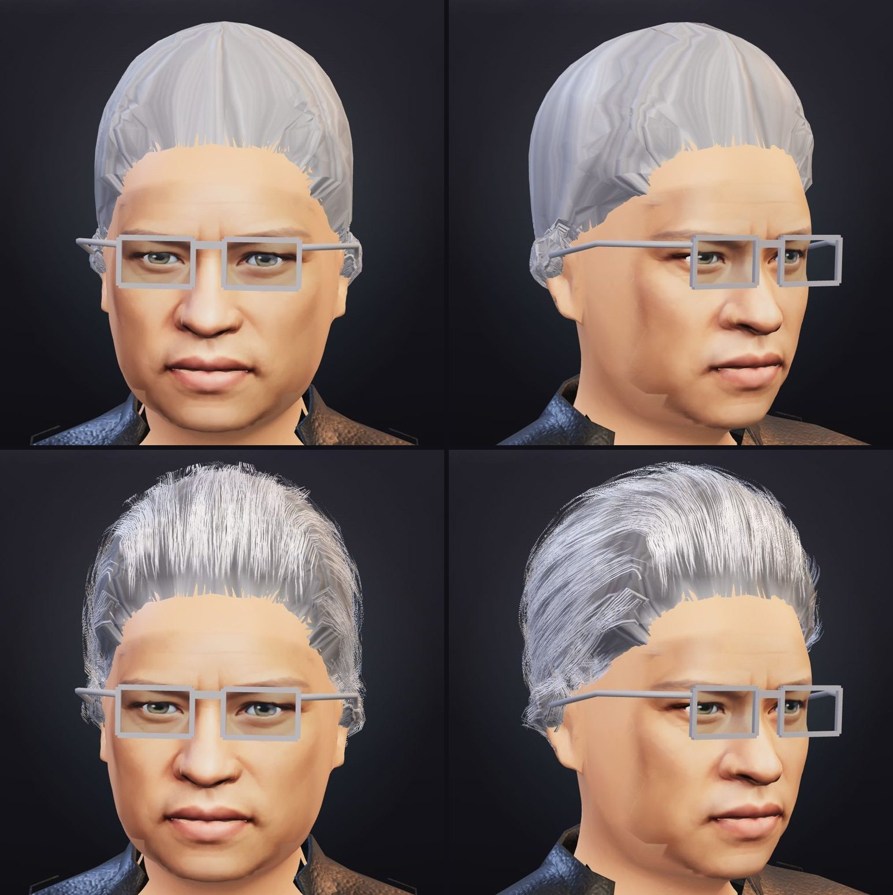
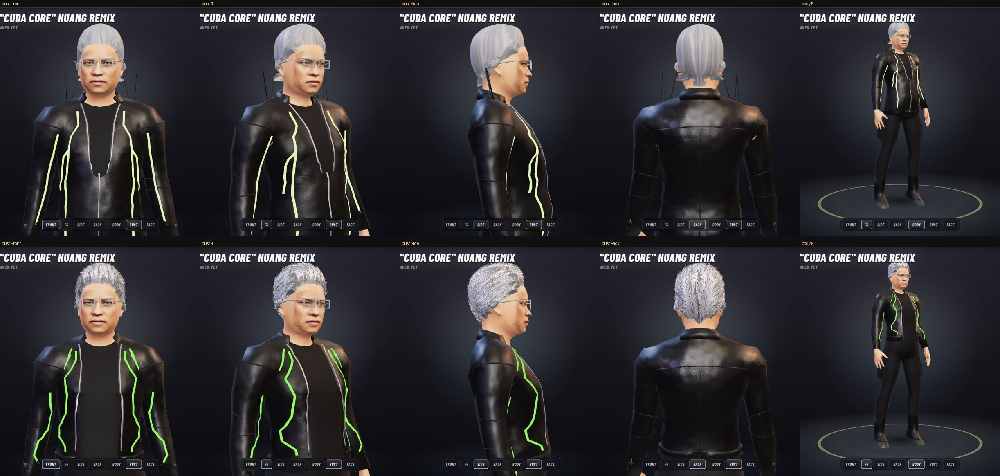
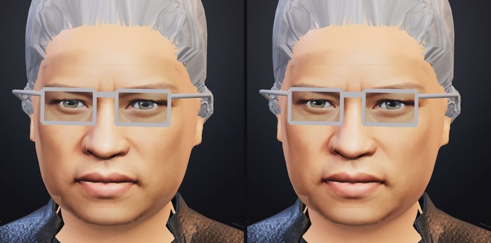
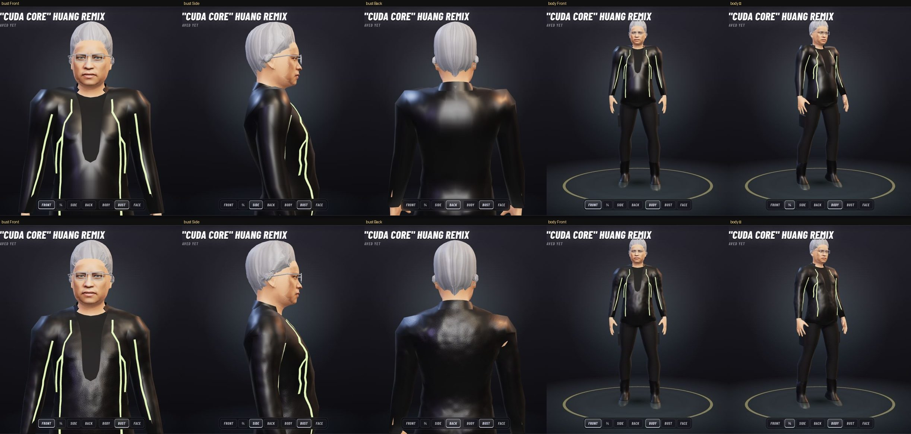
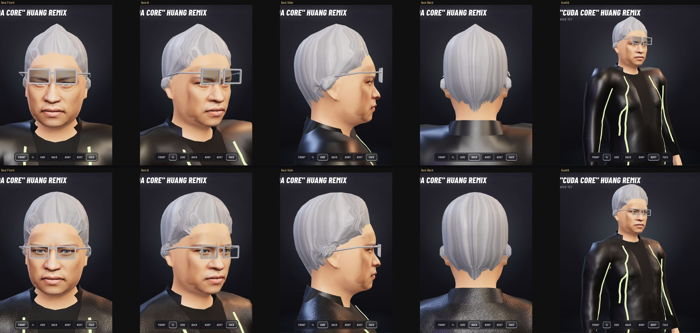
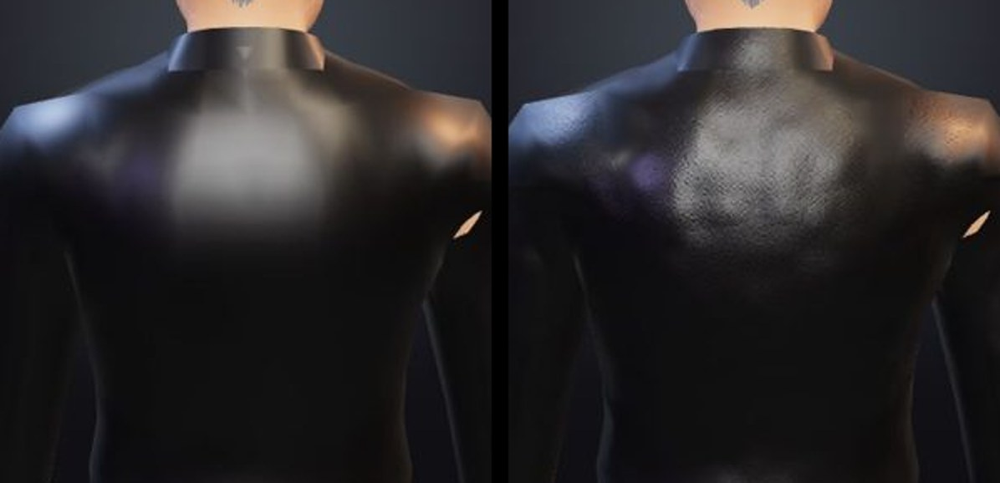

Jensen, up close
You said the Forge looked bad, and up close it did. So I shot Jensen the way the creator shows him and fixed what stood out, worst first. Twelve fixes landed today on feat/forge-creator, and nothing is pushed.
The latest come first. His face meets his skin with no line now, his hair is made of strands, his jacket is a real jacket and his skin is shaded as skin. This afternoon's five follow them.
In every picture the top row is Jensen before and the bottom row is Jensen now. Where two pictures sit side by side, before is on the left.
His face ended in a line
Once the hair read as hair, his face was the weakest part.
Four things gave it away, and each one's fixed.
- The photo stopped in an edge. The skin round his photo face is one flat colour, while the photo carries its own light and shade, so his jaw came out 24 levels darker than the skin it met, out of 255. Near its edge the photo now keeps its fine detail but takes the skin's colour. It also fades out before the last triangle it's drawn on, which cleared a staircase low on his cheek.
- The skin round it was plastic. Across his forehead it varied by less than 2 levels. Now it has pores about a millimetre apart, deeper in some patches than others, and faint blotches a little redder or paler. They show up close and fade out further back, so they won't shimmer.
- The glasses were thick grey bars. They're thin metal now, a round wire 1.8 mm across with rounded corners, an arched bridge, nose pads and 2 mm temples.
- The hairline was the hair shell's ragged edge. A grey band of shell sat between his skin and the strands, with skin poking up into it in spikes. Now the shell draws back 5 mm under the cards and the strands start right on the skin, so what you see at his hairline is hair, the way it is on a real head, and not the edge of a cap.


His hair was a shell
This afternoon I called hair the biggest step left for the face and guessed it would take a few days.
A first pass took an evening.
The swept hair is now 576 cards, thin strips that each start from a root on his scalp and run the way his hair does, up and back over the brow, straight back over the crown, back and down at the sides and down the back of his head. They come in three layers, thickest along the hairline, where they start right on the skin.
Each card draws nine clumps of strands. Every clump starts and ends at its own length and the gaps between them are see-through, so the edges look like hair and not like strips. Two highlights run across the strands, a sharp white one and a broad one in the hair's own colour, which is how light sits on real hair. The old shell stays underneath, darkened, so between the cards you see depth instead of scalp.
The cards only show in the creator's close look. The arena and the small busts still draw the shell, so twenty heroes don't each pay for 11,000 more triangles.

His jacket was still a wetsuit
The grain made the leather look like leather. But the jacket was still one smooth shell that closed into a V at the waist and ran on past his hips, with a flat band for a collar. So I rebuilt it from your reference picture as a moto jacket.
- It ends at the belt and hangs open from the collar to the hem, with a strip of tee between two silver zips. It used to run 12 cm longer.
- A stand collar 4.8 cm tall flares a little at the top.
- Seams run over the shoulders, round the armholes and elbows, across the back yoke and down the middle of the back. The hem and cuffs have real thickness now, so their edges catch the light.
The tech jacket's glowing lines run like circuit traces now. They zigzag down each front panel, branch from the collar toward each shoulder and step from side to side down the sleeves. They also used to come out pale lime, because the creator lit the glow like any cloth and then squeezed the brightest greens toward white. Now it shows its own green.
Two smaller fixes rode along.
A sliver of skin showed through the back of the jacket under his right arm, and the skin a jacket closes round in each armpit now stays hidden. And every top hangs from the body's high points instead of shrink-wrapping it, so a tee spans a cleavage instead of tucking into it.

His skin was shaded like plastic
The creator shaded skin with the same material as cloth, at a reflectance meant for plastic. Now it reflects light the way skin does. Its shading softens a little where light would scatter under the skin, a faint warm band runs along the edge of each shadow, and his eyes are glossy the way wet eyes are.
It's a small change, and I'd rather say so.
Measured on his cheeks and chin, the colour moves by two or three steps out of 255, and side by side you'd struggle to tell them apart. I tried stronger scattering and a velvet sheen first, and both flattened his face, so I took them back out.
The creator also paints his photo face at twice the size. Up close it used to get about 256 pixels across, half of what the photo gives it, and now it gets all 512. The arena keeps the old size, because twenty heroes at the new one would take over 400 MB of an 8 GB laptop's graphics memory.

He stood in a permanent shrug
This one hit every hero we have, in the arena too.
The motion library's shoulder bone starts closer to the neck than ours does, so when the performer relaxes, their shoulder bone points 2° above level while ours points 10° below. Our retargeter copied the direction each bone points. Every hero stood with their shoulders hitched 12° and the joints 4 cm high, which made the necks look short and turned jackets and tees into coat hangers.
Now each collarbone copies how far the performer moved from their own relaxed shoulder. Standing still, the shoulders sit where the body was built to hold them, and they lift about 3° on a walk and 10° on a run, the way a real runner's do.

His glasses floated, and his hair came to a point
Glasses and hats hang on fixed points that the build pipeline puts on the plain body. Jensen's age and weight lower his head by 19 mm. But the points stayed where they were, so his glasses sat on his eyebrows. Bezos's sat 18 mm high and Musk's 14 mm. The points now move with the face and head around them, whatever the hero's physique or face.
I also slimmed the square frames to 48 by 31 mm lenses and cleared the glass, so you can see his eyes.
The hair had two problems. The generator flipped a weight at the crown, so every swept style rose to a peak like an onion dome. That's fixed, and the crown is round. And the strands were drawn finer than a pixel, so they shimmered into marbled bands. Now they fade out before they can shimmer, and forty locks run from the crown to the nape with shade in the grooves between them.

His jacket read as a wetsuit
The creator drew leather as one smooth dark surface, so the light slid across it in a single blurry sweep, which is exactly what vinyl does. Leather now gets a pebbled grain two millimetres across and a soft swell where the hide doesn't lie flat, with patches worn a little smoother or drier. The relief holds at any distance, and the grain fades out before it can shimmer when you pull back to the full body.

What still looks wrong
- The hair stacks into plates over his temples. Seen from the front, the cards there run straight away from you at a grazing angle, and they pile up like shingles. I tried three fixes in the shading tonight and none of them cleared it. I think the cards there need laying differently, and that's a change to how they're built. From the side the hair also sits a little too full at the back.
- Only the swept style has cards. Every other style's hair is still a shell.
- Most of this only shows in the creator. Our arena draws with a different renderer, and I haven't ported the grain, the locks, the cards, the pores or the skin shading there yet. The jacket's new build does show in the arena, and so do the shoulders and the glasses.
Next I'll give the other hair styles cards, starting with the ones our starter heroes wear.
Then the temples.
If something else bothers you more, tell me and I'll start there.
The latest commits are 236c0af for the photo's edge, 268eeb5 for the pores, c1d0e7c for the glasses and 95c205b for the hairline. Tonight's before them are dd0a018 for the hair, 9c8c980, 62e585c, d79ad3e and c2de12b for the jacket, f30a64d for the traces and 87cba75 for the skin. This afternoon's are ef3f1ea for the glasses and hats, e050b04 for the crowns and frames, 0d72f79 for the shoulders, 9053210 for the leather and 04a1b64 for the locks.